09:09
机场不豪华，大巴也很怀旧，也许习惯了这种海岛的实用风格，所以并不奇怪，反倒是几位第一次到美国来的前辈，大加评论美国的落后。
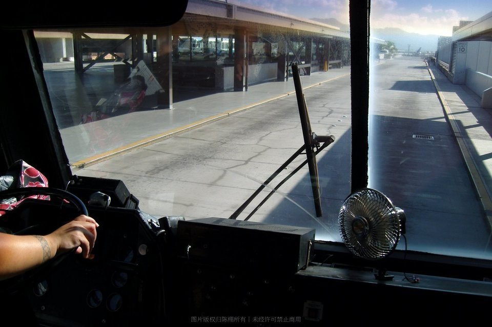
一个晕晕的假期，在没有任何准备的情况下就开始了。这周我转战南北，完成了郑州太原的出差，周三晚上12点回到家里，在睡了不到8小时之后就开始了这个跨洲旅行，目的地是夏威夷。准确地说是在出发当天早上才拿到出团通知，拿到的时候就是应该集合的时间，晕！还好心理素质好，不紧不慢地赶上了。飞机不知飞了多久抵达了火鲁奴奴机场，时差18小时，到了还赚了一天重新过11月29日。
机场不豪华，大巴也很怀旧，也许习惯了这种海岛的实用风格，所以并不奇怪，反倒是几位第一次到美国来的前辈，大加评论美国的落后。
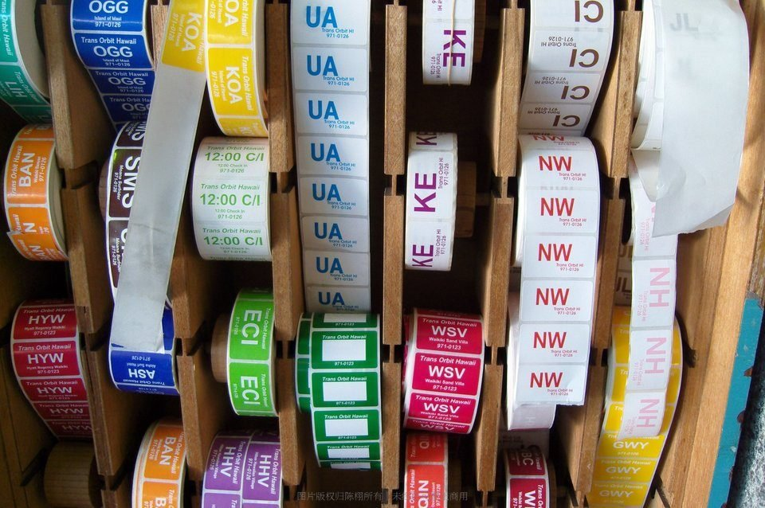
机场一出来就发现，这又是个日本游客集中的地方，日本几大旅行社的接机柜台都在最醒目的地方，就连配合各种航班出发的行李条也排列地井井有条，凸现日本人细节精神。
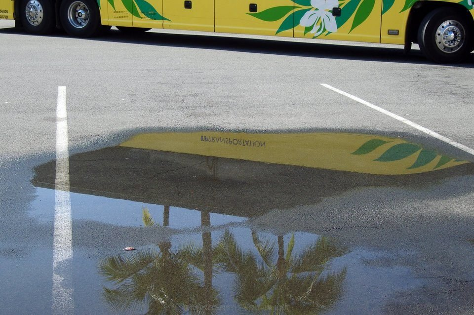
车场有很多漂亮的观光大巴，车公司的名字是波利尼西亚，看来是也算国字号了，鲜艳的车身颜色有浓浓的热带风味。
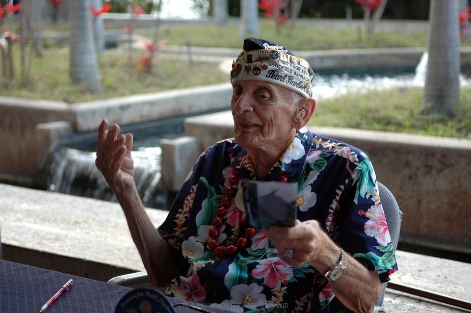
珍珠港是到访的第一个地方，一位当年幸存的老兵为游客作着签售，他想必至少有85岁了，相比较那些阵亡的他太幸运了，很容易从他身上看到乐观的态度，也许这就是长寿的秘诀。
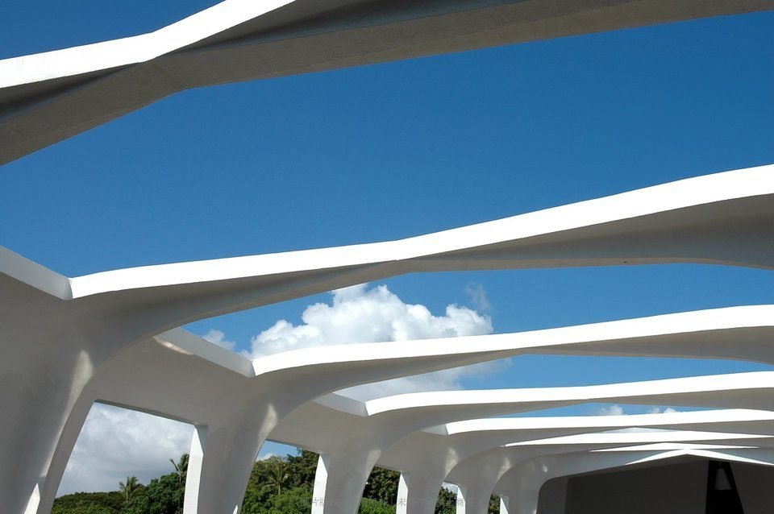
夏威夷土著人称珍珠港为“Wai Momi”,意指盛产珍珠的水，那里曾经生活着很多珍珠蚌壳，因此得名“珍珠港(Pearl Harbor)”。
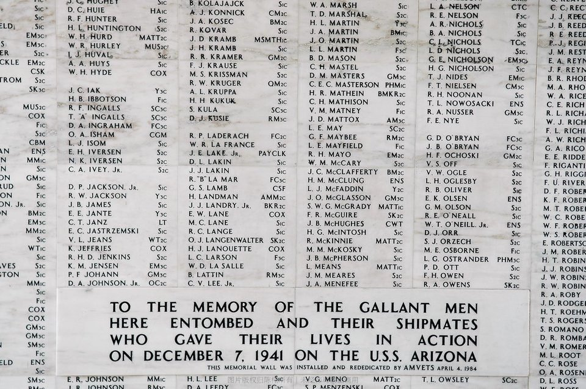
那些阵亡的人虽然死得重于泰山，但是他们在历史中越来越变成了一种抽象的看不懂的符号。我太晕了，睡觉睡觉，我太缺觉了！
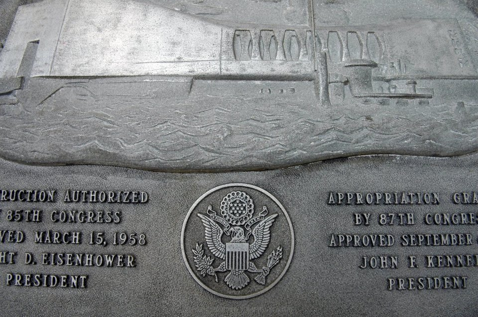
在第二次世界大战中被日军偷袭轰炸，从此闻名世界，遗址临近美国海军与美国空军的现役军事设施珍珠港——希甘姆联合基地。目前是夏威夷第二大旅游胜地。
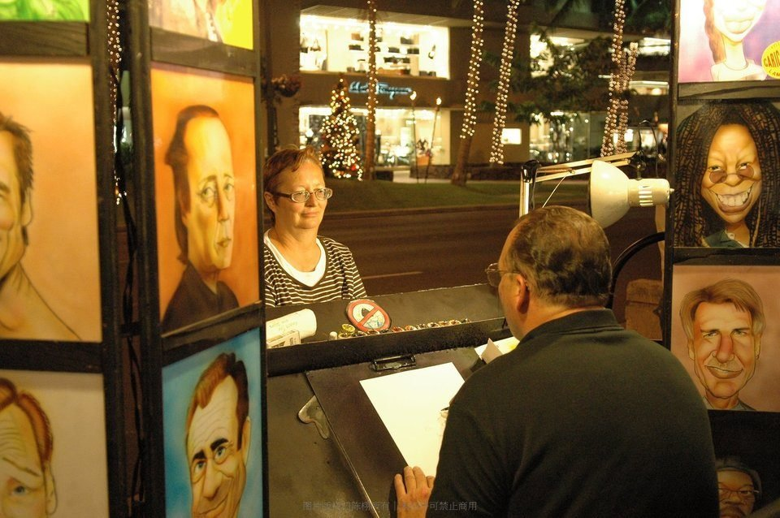
我的酒店只有一个优点，步行几分钟就可到香槟大道，这是一条人头攒动的购物大街，两边的商店全是奢侈品牌的专卖店，牌子已经记不全了，但是唯一能记住的就是这些店只能看买不起。香槟大道的另一特点就是有很多艺术男女在展示着自己，不论优劣都是个性的张扬的。画像的摊子是最多，很难讲哪位几百年后会成为印象派大师。
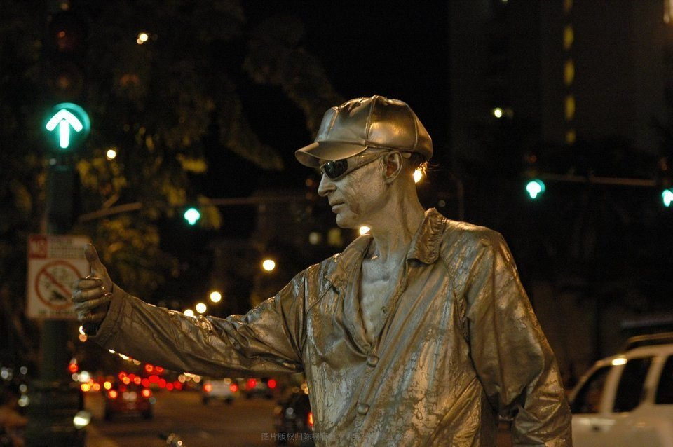
重塑雕像的权利，看到他就想到这个在德国留学后海归的乐队。
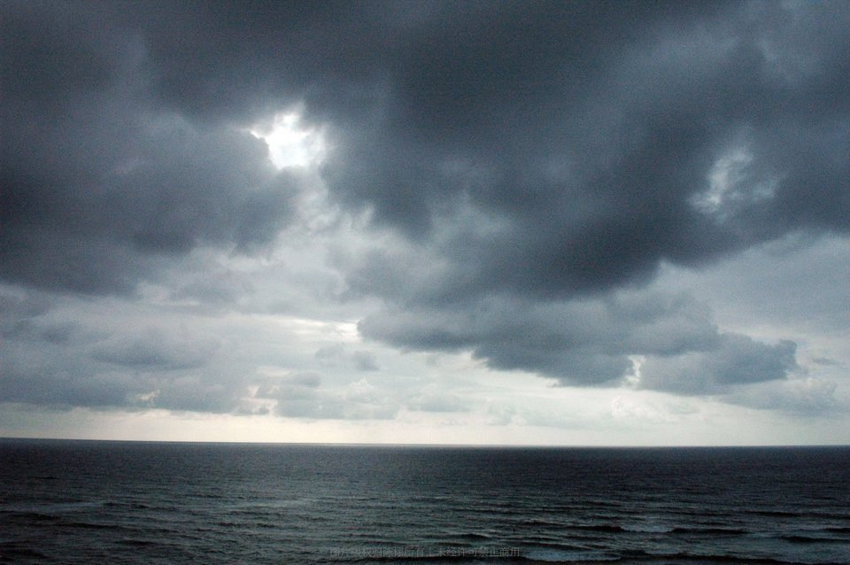
在夏威夷没有看到清澈透底的海水，一来这里本身就不如塞班二来天天是阴天，海水自然不够漂亮了，难怪去了四天没用防晒霜也一点没黑。
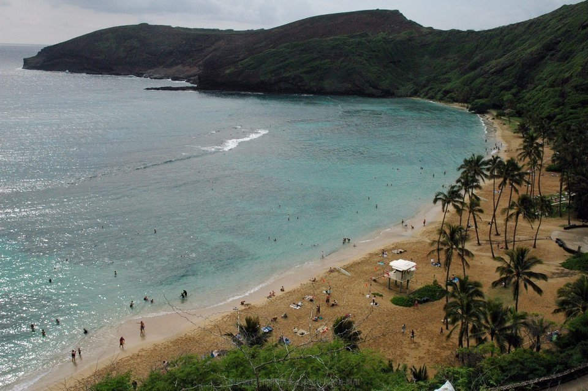
睡得两眼惺忪，被叫起来说这是恐龙湾， 看了看平凡无奇，想起了塞班的疯狗滩，看来全米国起名的灵感是一样的。
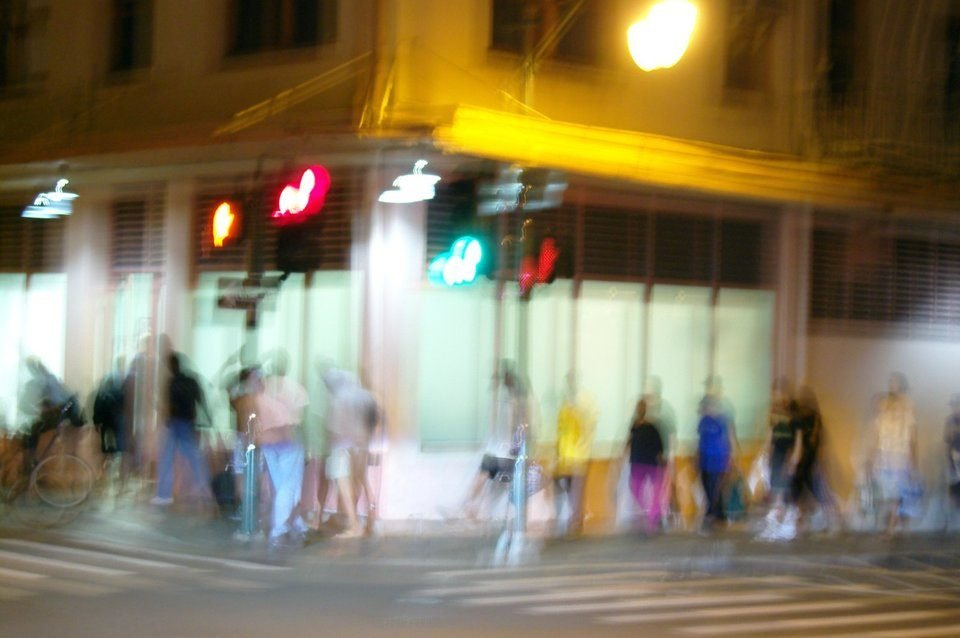
唐人街显得黯淡陈旧，连相机都会曝光不足，晚饭前看到有很多人在排队，据说那些是等着领救济餐的人，天天如此，其中有很多老华人。我想走近些拍拍，但是又怕伤害他们的自尊，一时间觉得我们是生活在不同世界的人，对他们的生活既好奇又陌生。
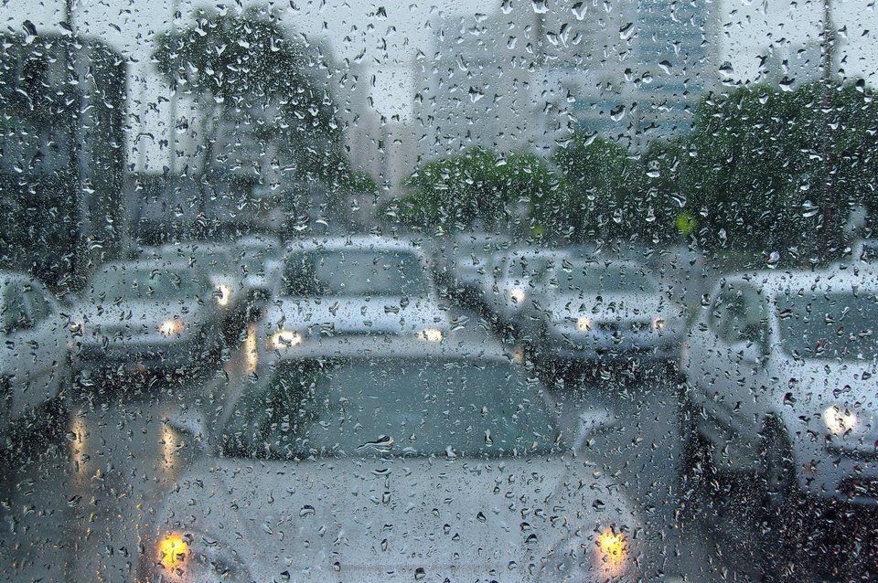
据说是大岛那边有个热带风暴，天天突然间就会下起大暴雨，留下最深的印象只有车中的雨景。
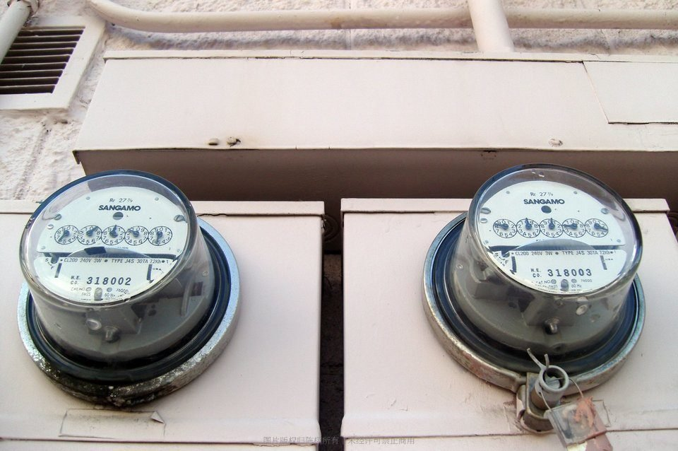
电表还能看出一点大工业的粗犷和精致，这是我印象中美国的感觉。
波利尼西亚是中太平洋的岛群。意为“多岛群岛”。位于太平洋中部，陆地总面积约20000平方千米。人口约 142万，多为波利尼西亚人。主要包括夏威夷群岛、中途岛、威克岛、图瓦卢群岛、汤加群岛。…… 波利尼西亚民俗村是杨百翰大学夏威夷分校的学生作服务生一个观光点，可能有课的原因，我们被安排在下午3点入园。由一个香港留学生带领，去体验一个一个岛国民俗。因为我刚睡醒一直很晕，就低头跟着走路给啥看啥。
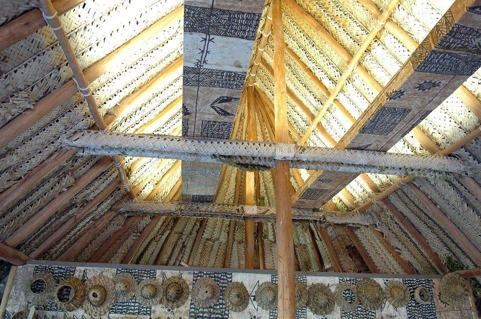
从草房的构造来看就知道那个地方没大风没大雨，不很冷，不过这连小孩都看得懂，无奈整个夏威夷之行的记忆就是睡了吃吃了睡，另外导游是个棒槌，我们也只能傻傻地当麦兜了。
不知道是哪个岛国的印染品，印象中常常是用来裹住岛国婀娜女子的身体的，挂着卖还真有点不认识了，这些花布真幸福，我化身成布吧！
又是哪个岛国的打鼓做游戏，完全忘了，说的话也没听懂，但是却能直接感受到他们的真诚和热情，还有就是倍棒的胸肌，男人称赞男人有些奇怪，但是有多少女人会不顾一切说这种真话呢？
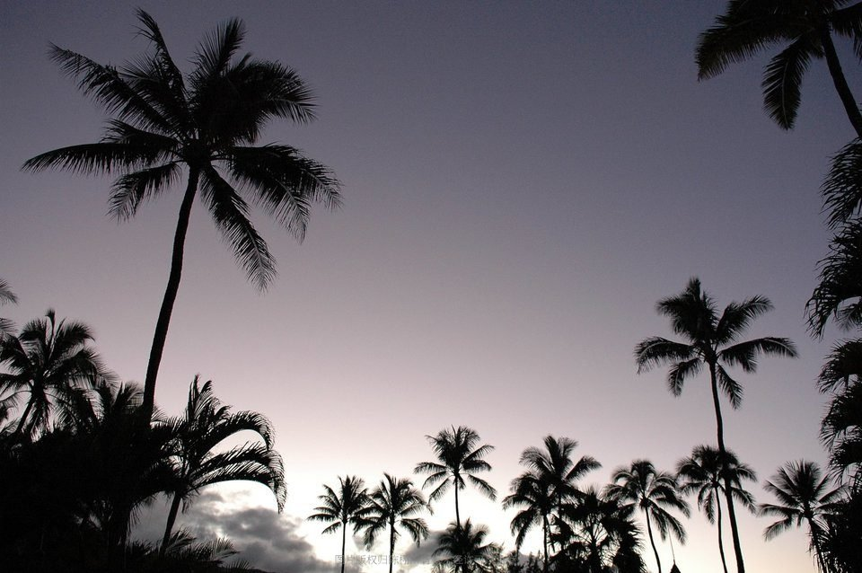
夏威夷很难找到美国本土的样子，充其量就是个比较繁华的海岛，因为随处可见的椰树很容易把她和塞班关岛联想在一起。
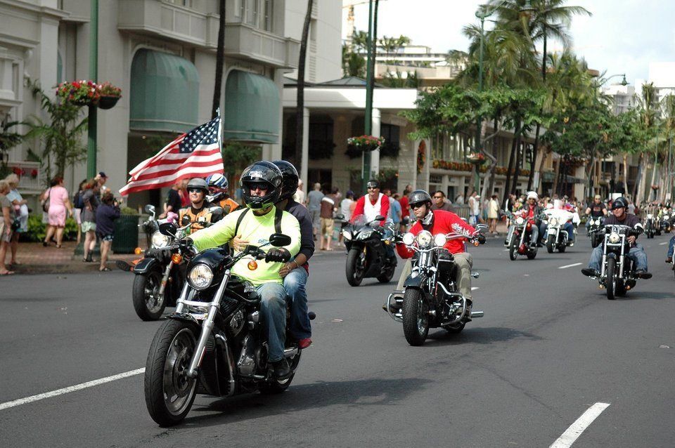
一群暴走族的游行聚会，很多50好几的大妈大叔也挺酷的，才感觉酷不仅仅属于年轻。
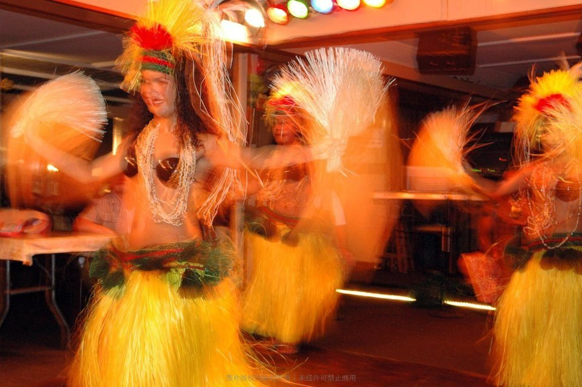
草裙舞的摆动频率相当可以，想太多了，有点邪恶。
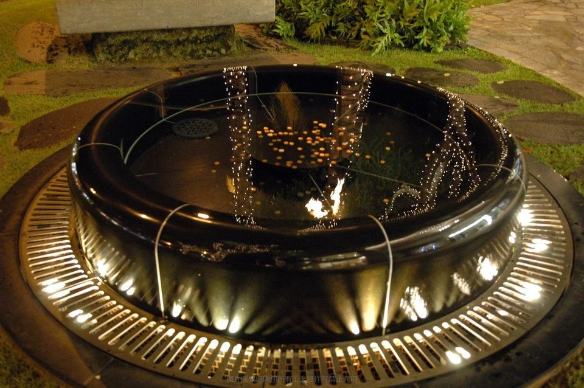
再次来到香槟大道，人都是怕黑的，夜晚只要有明亮的灯光，就不会感到孤单，一切就会充满希望。
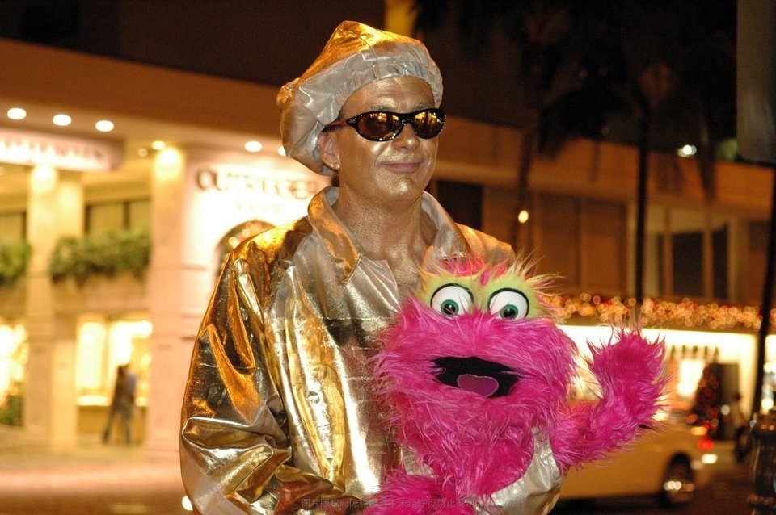
头两天看还假装雕塑呢，今天就演玩偶了。
一个不该出门的时间去了一个事先没做好功课的地方，一群不达嘎的人进行了四天错位的旅行，用无聊来评价并不为过，我天天昏昏欲睡，可以说一直在倒时差，回来反倒舒服了，因为时差根本就没倒过去。原本好玩的地方硬被棒槌的导游搞成了中国大饼团的上车睡觉下车尿尿回来什么都不知道。
留言